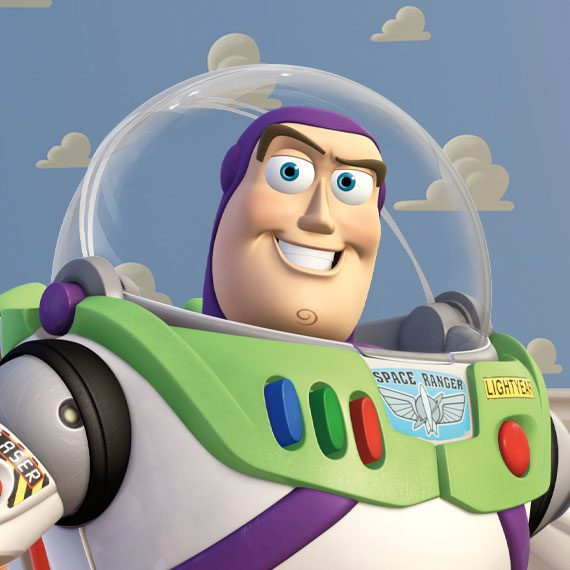
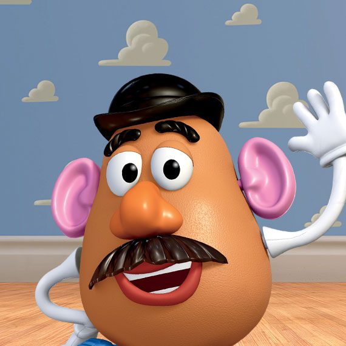

WOODY
Um cowboy de brinquedo e o líder do grupo de brinquedos. Woody é leal, corajoso e tem um forte senso de responsabilidade por seus amigos. Ele é o melhor amigo de Buzz Lightyear e muitas vezes atua como o "herói" da história, sempre buscando a segurança e felicidade dos brinquedos.

JESSIE
Uma cowgirl animada e corajosa, que é amiga de Woody. Jessie é cheia de energia e tem um espírito aventureiro, mas também carrega uma tristeza no coração devido a um passado de abandono. Ela é otimista e tem um amor profundo pelos seus amigos.

BUZZ LIGHTYEAR
é um brinquedo astronauta, conhecido por sua coragem, determinação e por sua famosa frase "Ao infinito e além!". Inicialmente, ele acredita ser um verdadeiro astronauta em uma missão para salvar o universo, mas logo descobre que é apenas um brinquedo.

CABEÇA DE BATATA
Um brinquedo com uma personalidade engraçada e um tanto rabugenta. Ele pode "remover" e trocar partes de seu corpo (como olhos, boca e nariz), o que o torna bastante único. Apesar de ser um pouco irônico e mal-humorado, Cabeça de Batata é fiel aos seus amigos e está sempre disposto a ajudar quando necessário.

REX
Um dinossauro de brinquedo, muito tímido e inseguro. Rex é grande e aparentemente imponente, mas na verdade é muito gentil e tem medo de muitas coisas. Sua principal preocupação é não ser "suficientemente assustador", mas seus amigos sempre o ajudam a ver o valor que ele tem.